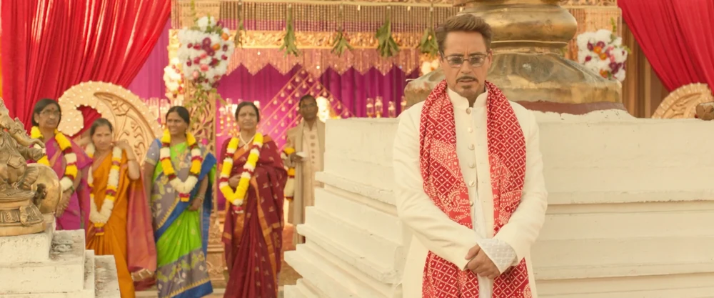
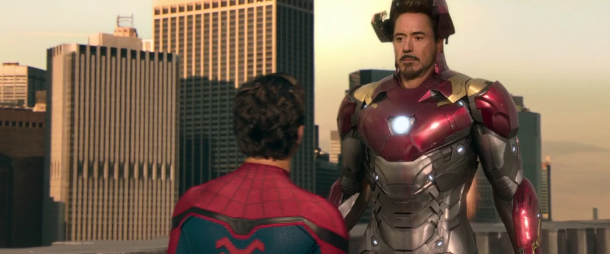
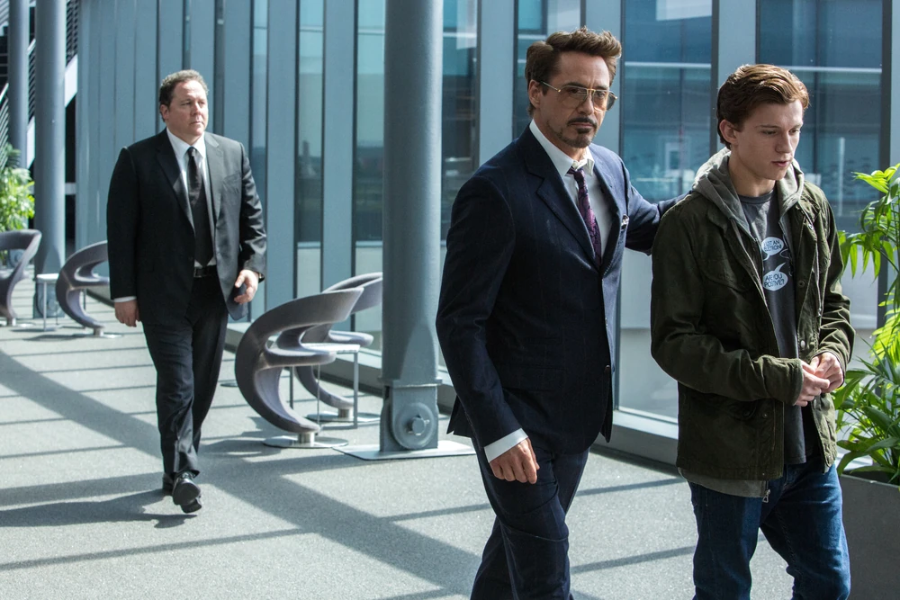
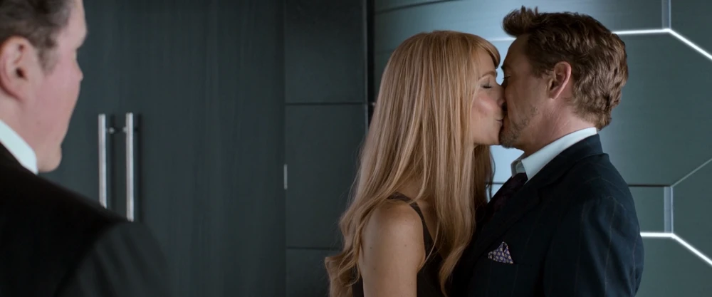
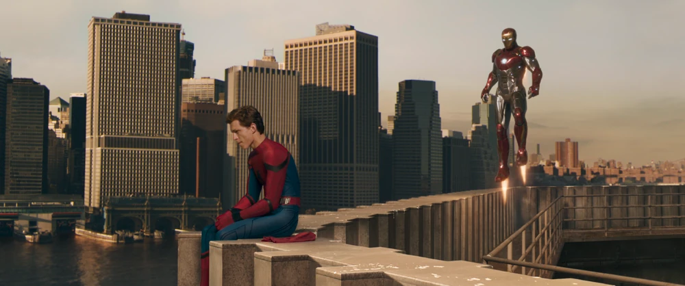

Tony Stark takes on a fatherly mentoring role for young Peter Parker, providing a high-tech Spider-Man suit while teaching him the responsibility that comes with great power. When Peter disobeys and gets in over his head, Tony must decide whether to protect Peter or let him learn from his mistakes.

Limo Ride with Peter
Tony Stark drives Peter back to Queens in his limo after the airport battle. He gives him the high-tech suit but advises him to stay "close to the ground."

Indian Wedding Drone Call
While attending an Indian wedding halfway around the world, Tony speaks to Peter via a remote-controlled drone, checking in on his patrols.

Staten Island Ferry Rescue
When the Staten Island Ferry is split in half by alien weaponry, Tony Stark arrives in the Mark XLVII, deploying micro-thruster locks to physically hold the ship together.

Personal Confrontation
Tony steps physically out of the Mark XLVII armor to confront Peter in person. He demands the suit back, teaching him that the hero is the man, not the tech.

Offering the Iron Spider Suit
Impressed by Peter's growth after defeating Vulture, Tony Stark invites him to the Avengers Facility, offering him the advanced new Iron Spider suit.

Press Conference with Pepper
When Peter declines the offer, Tony Stark repurposes the waiting media press conference to announce his public engagement to Pepper Potts.

Coordinated Fly-By
Iron Man and Spider-Man fly side-by-side through the skies of Queens, showcasing their dynamic mentor-protégé relationship.